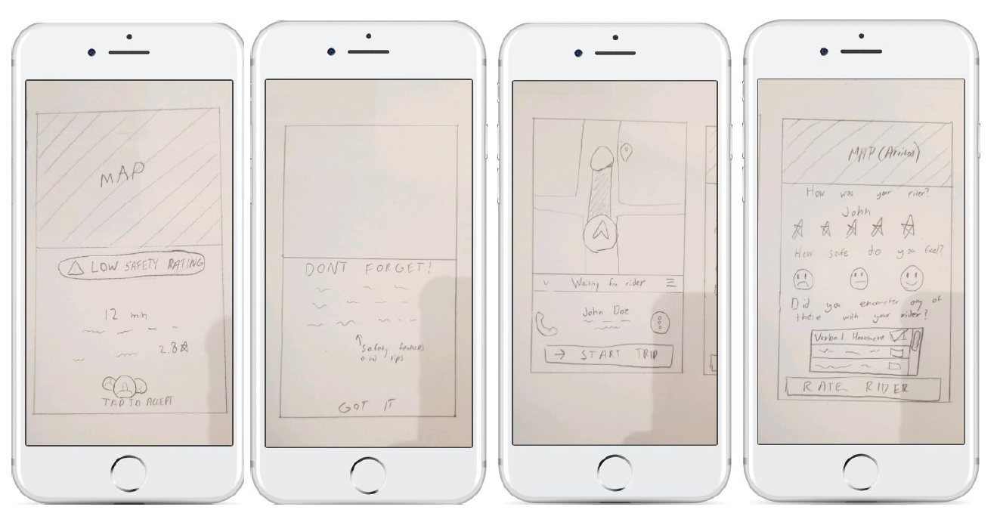
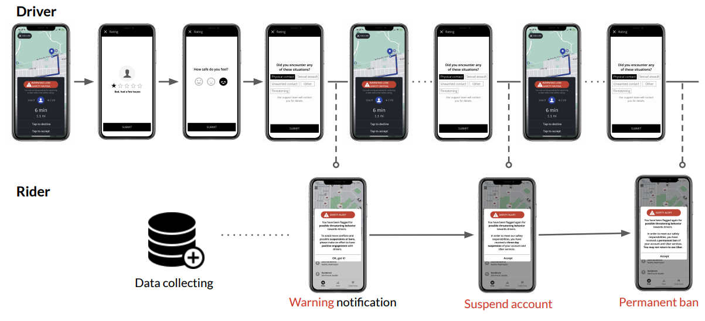
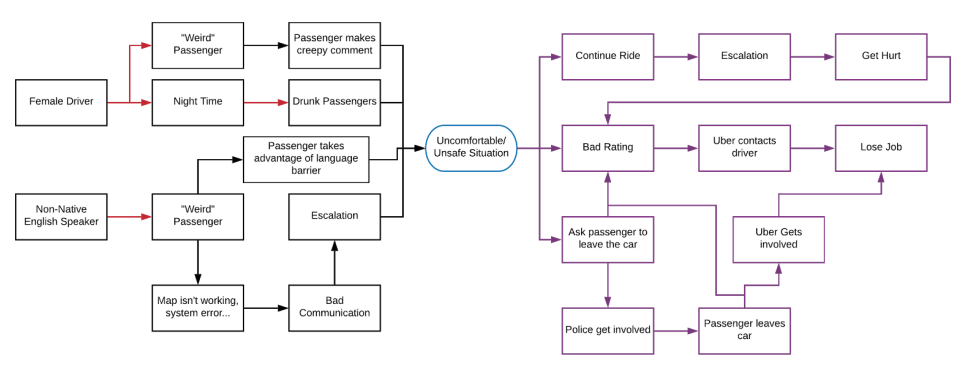
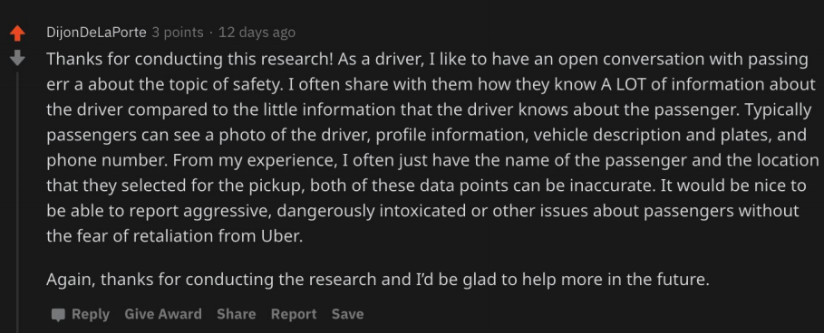

Rideshare Safety Feature
Made With

Access
Problem Space
In this time period, more and more people are depending on rideshare services
like Lyft and Uber as a means of transportation. These new rideshare services bring a
plethora of safety problems not only for the passengers but also for the drivers. The
drivers often have to be in difficult situations where their safety is in jeopardy. Most
ride-sharing drivers are exposed to many types of passengers: drunk people,
aggressive people, and rude people. There are some safety features for passengers,
but not enough for drivers even though their encounters with many different people are
compounded daily.
Specifically, we focused on problems that might arise when the driver has a problem
with the passenger. For example, what if the passenger is very rude when they get in
the car, what if the passenger makes the driver uncomfortable, what if the driver
encounters a drunk passenger. We believed this is the most important problem because
it could be the most common problem that the driver faces. This specific problem also
gave us the ability to be more creative with our solutions as opposed
Roles
Team Lead
Communicated with other teams working on other aspects of design and development for the project as well as instructor. Managed team members and their deliverables.
UX Designer
Developed UX and UI designs in a team of three. Conducted online user research during the COVID-19 pandemic and created the final UI designs.
Prototyping
High Fiedlity
Low Fidelity
User Timeline
User Research
Contextual Interviews
In the first contextual interview, the focus was on the safety of the rider in the rideshare
equation. A key observation made was that the perceived safety of both the rider and
the driver were dependent on each other. All of the safety features that we could see
were available to the rider. It was unclear what was available to the driver. The driver is
also in control of the environment of the car, which contributes to the safety and
comfortability of the driver and rider.
The last contextual interview put the driver in focus in order to think about safety from a
different perspective. An interesting observation was that most of the time, the driver
had more to lose. If the driver did not want to pick up the passenger because the
passenger had a low rating, it increased the declining rate for the driver. The higher the
declining rate the lower the chance of the driver getting a ride that made them the most
amount of money. This meant that the drivers sometimes have to sacrifice their safety
for money. This was an important observation because it allowed us to see how the
driver is often at a disadvantage.
Online
The Uber Driver subreddit (r/uberdrivers) was a great source of rideshare drivers voicing their own opinions and needs. We witnessed a resentment towards Uber for not taking their safety as seriously, as well as many pieces of anecdotal evidence of unsafe situations.
Driver Interaction Map
Ideation
After some more user research and ideating over 50 ideas, our group decided on a concept that would allow
drivers to report riders that exhibited unsafe behavior. With this data, drivers could make decisions like
if they should that person or not, if a rider were to exibhit very unsafe behavior, then they would be
banned.
For the low fidelity prototype, we sketched out wireframes, and then uploaded them to Marvel to add
naviagtion functionality.
User Testing
Contining with the utilization of online comumnities of rideshare drivers, I posted again to reach people that my team saw using our feature. I was able to send out a link to a Figma prototype and privately chat with them to understand their frustrations and successses.
